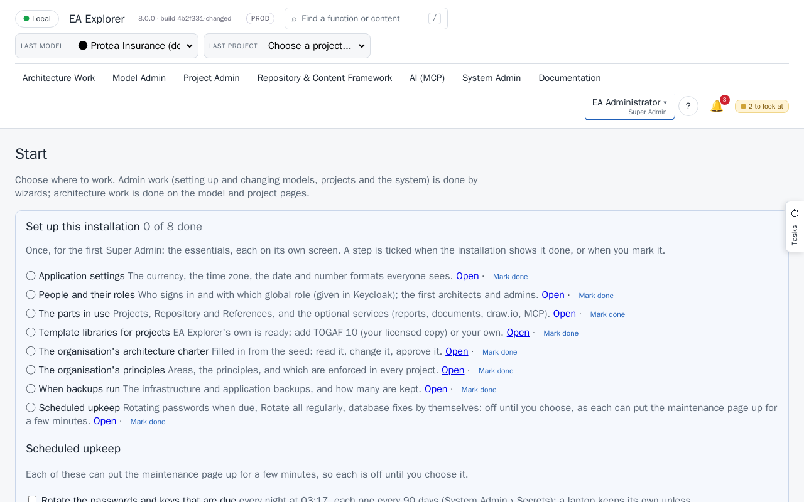

Get help on any screen
For: Practising architects, System Admin, Model Admin, Project Admin
What the screen in front of you is for, and how to use it.

#/Why do this
Every screen, tab, pop-up and button in EA Explorer has help that explains what it is for and how to use it, one key press away. It is the quickest way to learn the tool as you work.
EA Explorer covers a lot of ground. A few habits (search, help on every screen, your own requests and pins) make it feel smaller and get you to your work faster.
In TOGAF terms: General use of the tool, across every part of the Architecture Repository. See EA Explorer and the TOGAF Standard.
The goal: You understand the screen in front of you.
Steps
- Press F1, or ? › Help for this page: a panel beside the page explains what is on the screen (the pop-up, the wizard step, the tab or the page), with a search over all the help.
- Hover over a button, tab or field for a short tooltip.
- ? › Questions (or Documentation › How do I › Questions): every question for your role, with its quick steps, the guide to read and its video.
- ? › Documentation: every document that ships with your version, each printable; ? › Website for every How do I page and the role guides.